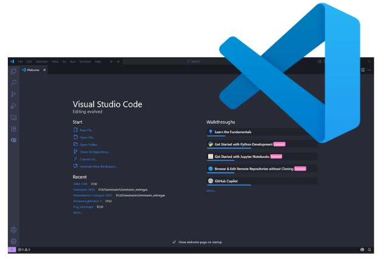
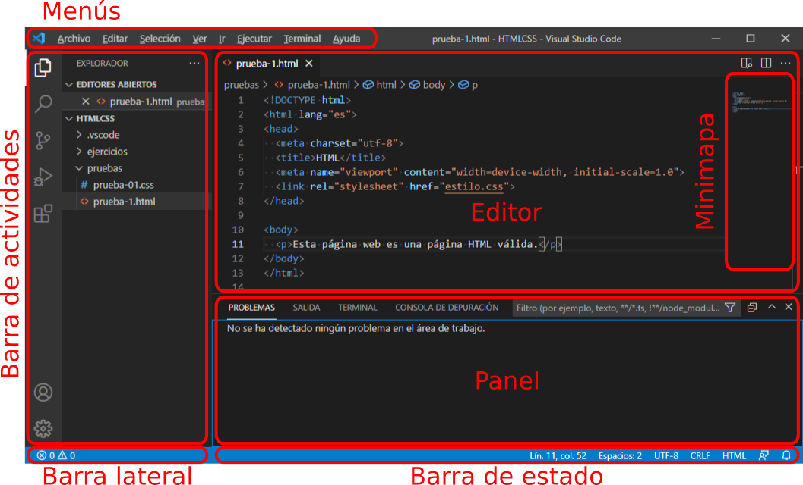
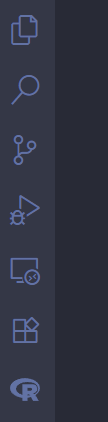
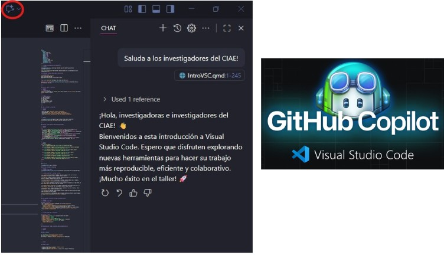

Módulo 2: Introducción VS Code
Katherine Aravena Herrera
Talleres de Formación Interna - CIAE, Jueves 02 de octubre de 2025

Laboratorio de Investigación Social Abierta - COES
Introducción a Visual Studio Code
Objetivo y plan
Objetivo: Comprender la interfaz de VS Code y ejecutar un mini flujo con carpeta, archivo, terminal y atajos.
- ¿Qué es VS Code?
- Interfaz general
- ¿Qué abrir?
- Atajos clave
- Personalización rápida
- Enfoque en el editor
- Cierre
¿Qué es VS Code?
- Editor de código gratuito, liviano y extensible.
- Multilenguaje: R, Python, Quarto, LaTeX, HTML/CSS/JS.
- Integra Terminal, Git, Depuración y Extensiones.
- Ideal para flujos reproducibles con Git/GitHub y Quarto.

Interfaz: visión general
- Barra de actividad (izquierda): Explorer, Search, Source Control, Run, Extensions.
- Barra lateral: contenido del panel activo (árbol de archivos, búsqueda, Git, etc.).
- Área de edición: pestañas, split view, vista previa.
- Paneles (abajo): Terminal, Problems, Output, Debug Console.
- Barra de estado (abajo): idioma, posición del cursor, rama Git, espacios/tabs, contenedor, etc.
Así se ve
Barra de actividad

① Explorer —> Tu carpeta de trabajo. Aquí ves y ordenas todos los archivos y subcarpetas del proyecto (crear, renombrar, mover o borrar).
② Search —> Busca en todo el proyecto. Encuentra palabras o frases en todos los archivos y permite reemplazarlas de una sola vez.
③ Source Control (Git) —> Historial y versiones. Guarda cambios con un “commit”, revisa diferencias y sincroniza con GitHub u otro repositorio.
④ Run & Debug —> Probar y encontrar errores. Ejecuta tu programa y, si algo falla, te deja avanzar paso a paso para ver qué está pasando.
⑤ Remote Explorer (extensión) —> Trabajar a distancia. Abre proyectos que están en otra máquina o entorno (SSH, WSL, contenedores) como si fueran locales.
⑥ Extensions —> Añadir funciones. Instala complementos que suman lenguajes, temas, correctores de estilo, soporte para Quarto, etc.
⑦ Testing —> Comprobar automáticamente. Ejecuta pruebas que verifican que tu código sigue funcionando al hacer cambios.
⑧ R (extensión) —> Herramientas para R. Consola interactiva, enviar líneas o bloques de código y buena integración con Quarto y notebooks.
Para comenzar
Desde la interfaz
- En la barra de actividad (izquierda), haz clic en Explorer.
- En la vista Explorer:
- Abrir carpeta… → muestra el árbol de archivos en la barra lateral.
- Nuevo archivo / Nueva carpeta (botones sobre el árbol).
- Arrastrar y soltar una carpeta desde tu sistema → se abre como área de trabajo.
- En la pantalla de Bienvenida también tienes Open Folder y Open File.
- ¿Para clonar un repositorio?
Comandos rápidos
- Quick Open:
Ctrl+P→ ir a cualquier archivo por nombre. - Abrir archivo:
Ctrl+O - Nuevo archivo:
Ctrl+N - Abrir carpeta:
Ctrl+KluegoCtrl+O - Cambiar área de trabajo:
Ctrl+KluegoCtrl+R(recientes) - Paleta de comandos:
Ctrl+Shift+Ppor ejemplo:- Git: Clone
- Quarto: New document
Personalización rápida
VSC en español
Ctrl+Shift+P→ Configure Display Language
- Elegir Español → Restart
- Verifica la extensión Spanish Language Pack en Extensiones
Temas de color
- Archivo → Preferencias → Temas → Tema de color
- Predeterminado: Dark Modern
- Sugerencia: prueba Light Modern o instala otros temas del Marketplace
Áreas de trabajo
- Carpeta única (recomendado para cursos): Archivo → Abrir carpeta…
- Workspace (multi-carpeta): Agregar carpeta… → Guardar área de trabajo como…
- Nota: cada área puede tener su propia configuración en .vscode/
Extensiones
Ctrl+Shift+X→ buscar → Instalar- Recomendadas: Spanish Language Pack, GitLens, GitHub Pull Requests, Python, R, Quarto, Markdown All in One, ESLint, Prettier
Más información

Uso de GitHub Copilot en Visual Studio Code.